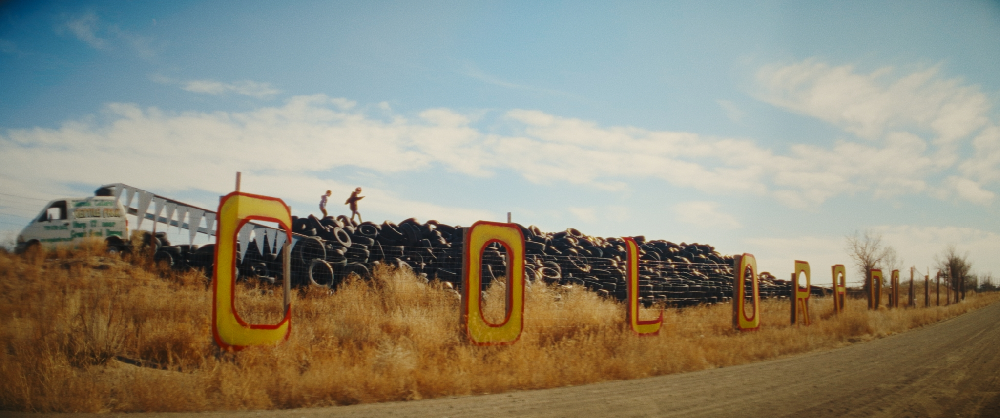
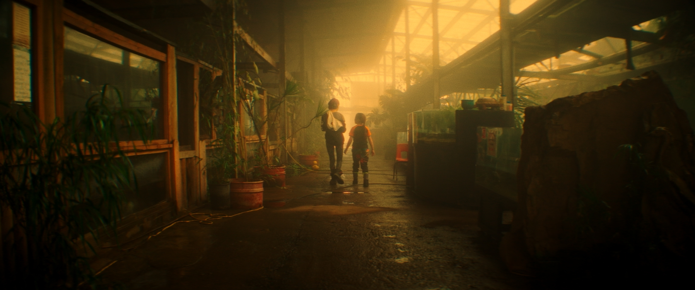

Gatorville
original score · 2025


- Director
- Freddie Gluck
- Executive Producers
- Caitlyn Greene, Freddie Gluck, Tim Zaug
- Producers
- Chloe Campion, Freddie Gluck, Matteo Moretti
- Director of Photography
- Matteo Moretti
- Editor
- Freddie Gluck
- Color
- Stephen Derluguian
- Original Score
- Luca Moretti
- Sound Mix
- Calvin Pia
Festivals & Screenings
- Big Sky Documentary Film Festival 2026World Premiere, Best Short Documentary Competition
- IFFBoston 2026Grand Jury Prize Documentary Short
- Palm Springs International Shortfest 2026Best Short Documentary Competition
- True/False Film Festival 2026Official Selection
- Full Frame Documentary Film Festival 2026Official Selection
- Aspen Shortsfest 2026Official Selection
- DC/DOX Documentary Film Festival 2026Official Selection
- Calgary International Film Festival 2026International Premiere
- Rooftop Film Series 2026Official Selection
- Middlebury New Filmmakers Festival 2026Official Selection
- RiverRun International Film Festival 2026Official Selection
- Sony Future Filmmaker Awards 2026Shortlist
- AmDocs Film Festival 2026Official Selection
- International Wildlife Film Festival 2026Official Selection
- NFFTY 2026Official Selection
- Taos Film Festival 2026Official Selection
- Ouray Film Festival 2026Official Selection
- BEYOND: The Cary Film Festival 2026Official Selection
- Drunken Film Fest Oakland 2026Official Selection